Uploading your key with Windows¶
GIT is a set of tools used by developers to share projects. We will not actually be using GIT for this project, but the installer contains a useful tool that we will be using.
To start off visit the git for windows page and download the installer.
Download the installer.
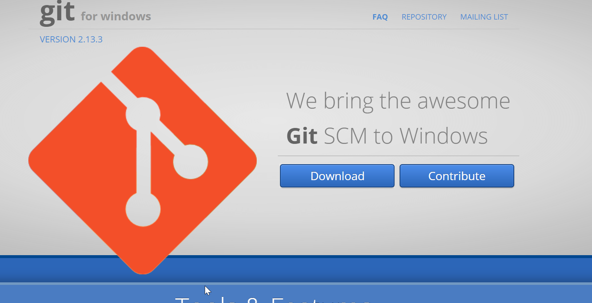Run the installer. Most, if not all, the options we are just going to leave as default)
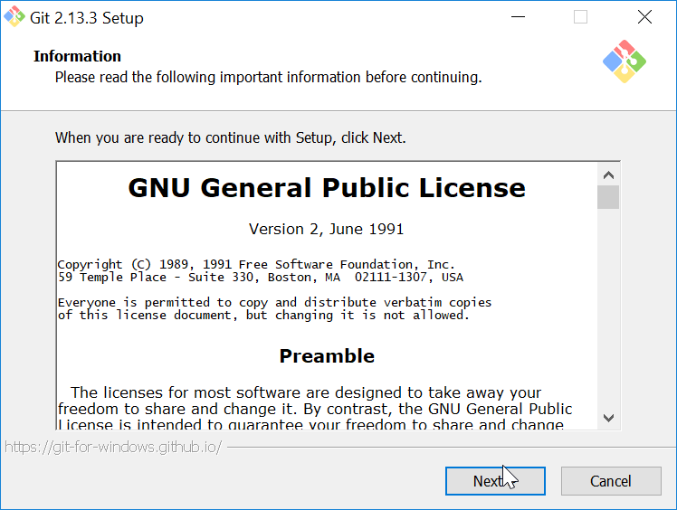 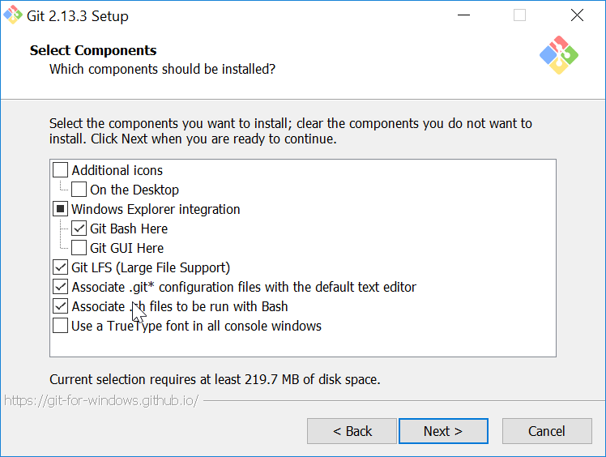 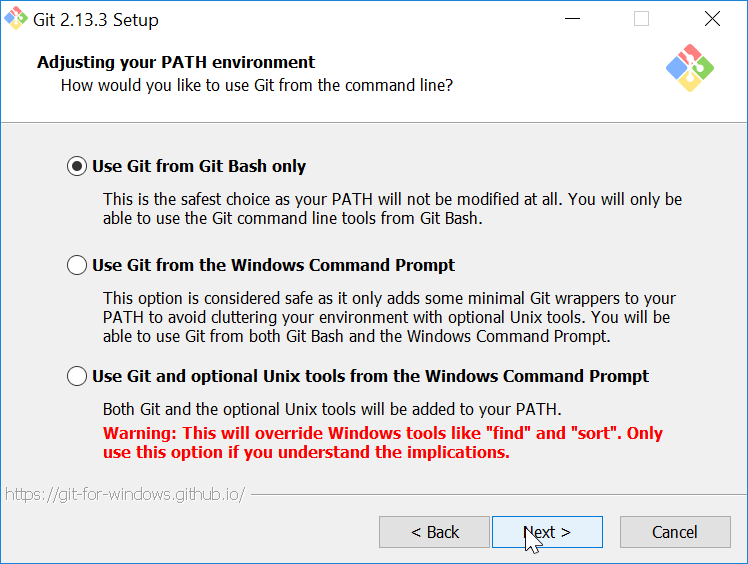 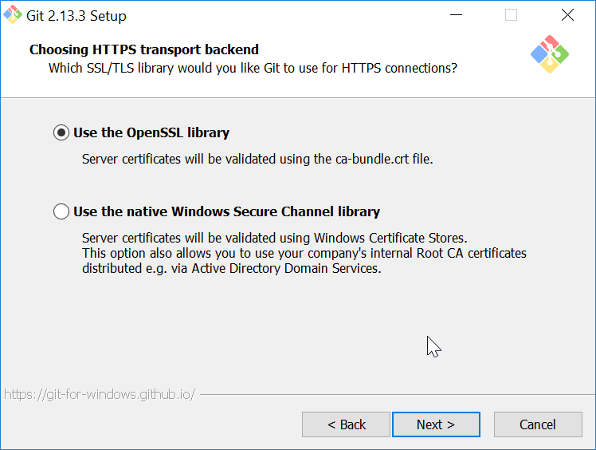 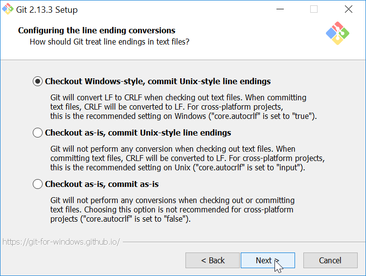 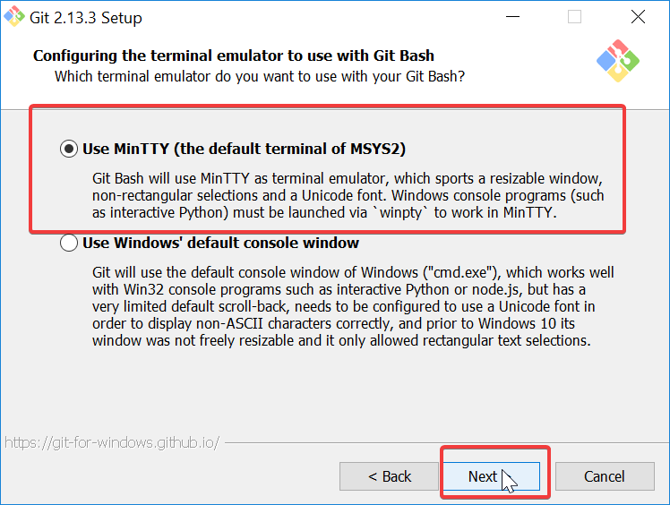 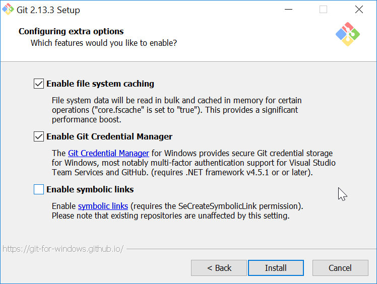 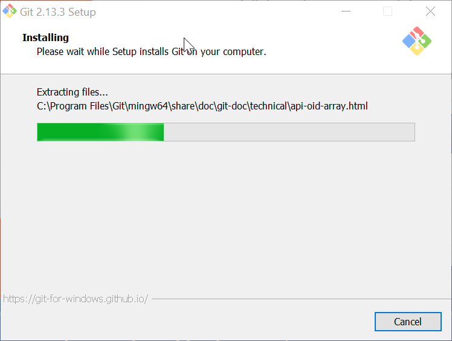Once GIT has been sucesfully installed open the folder where
you have downloaded your private.key and your public.key file.
This is normally in your downloads folder.
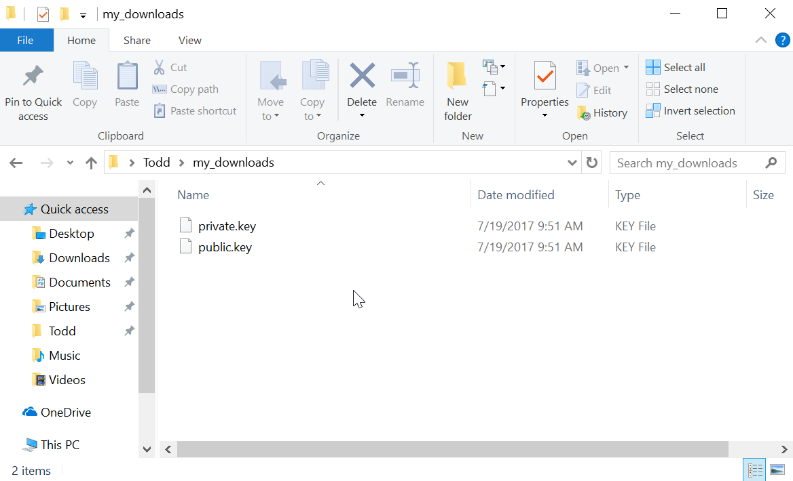Right click somewhere in the folder and click “Git Bash Here”
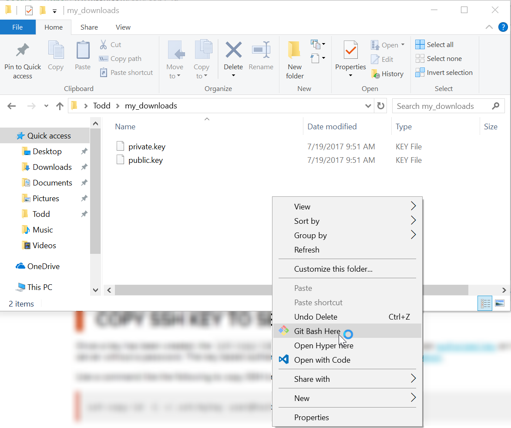A black windows should pop up, similar to below. this is a terminal. A basic text based interface.
Next we are going to rename our files so the software can recognize them. To do this we are going to be using the mv command. Once you are ready type the following into the terminal window. Press the enter key to send commands.
mv private.key id_rsa
press enter
mv public.key id_rsa.pub
Finally we are going to run the ssh-copy-id command to upload our public key to the server.
The command takes a few arguments.
- -f Forces the command to attempt to upload
- -i lets up provide our own key (in this case id_rsa.pub)
- the final argument is our username@hpc.arizona.edu
Once you are ready type the following into the terminal window.
MAKE SURE TO FILL IN YOUR OWN USERNAME BELOW
ssh-copy-id -f -i id_rsa.pub USERNAME@hpc.arizona.edu